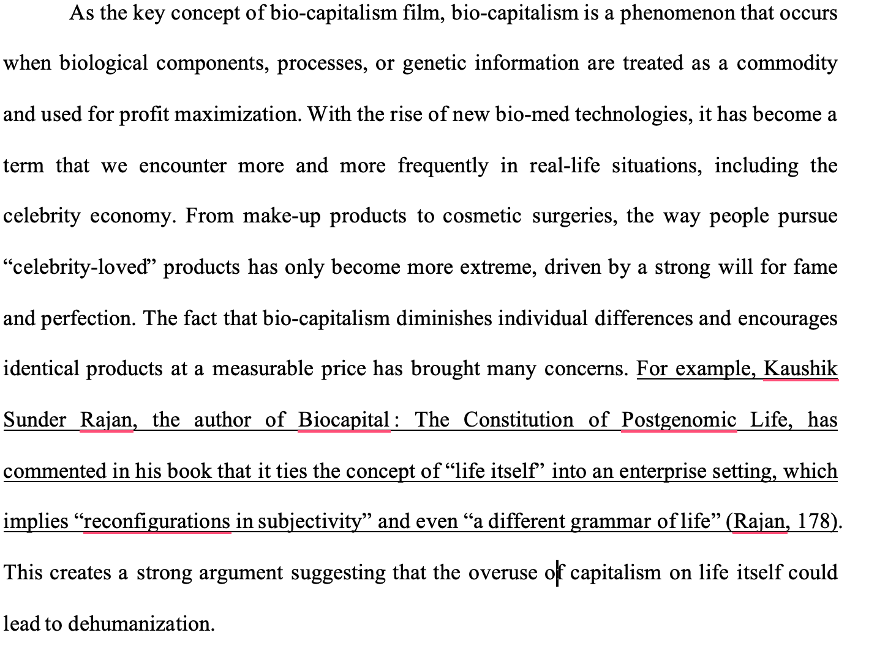
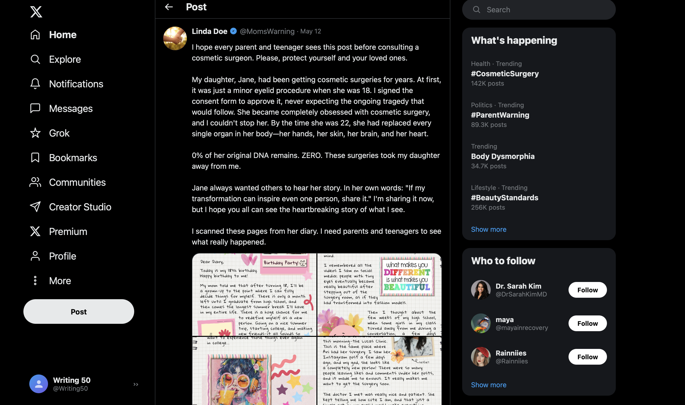

Documenting My Understanding of Genre
Understanding Bio-Capitalism in Literature Review

Image 1: A screenshot from my genre analysis, showing my research on bio-capitalism and Sunder Rajan's work.
This image is a screenshot from my genre analysis, which records how I developed my understanding of bio-capitalism through literature review. The first time I watched the scene of Hannah Geist's huge advertisement in Antiviral, the phrase "big brother is watching you" just naturally popped into my mind, and I knew from the start that this would be a topic worth discussing in my essay. By the time I did some research, I realized that there were so many categories in capitalism, and I needed to specify that. The category "bio-capitalism" was brought to my attention at that time. The fact that it discusses how humans are being commodified deeply aligns with what I want to write in my essay.
My understanding of this genre mainly came from Sunder Rajan's Biocapital: The Constitution of Postgenomic Life, which covers the definition, technical review, and a philosophical understanding of how bio-capitalism affects humans. I was deeply impressed by his argument that bio-capitalism could lead to the "reconfiguration in subjectivity" (Rajan, 178). The implication is that the commodification of human itself turns people into bystanders of their lives, which leads to the loss of humanity. As a result, I used it as a quote in my essay as a definition and support of bio-capitalism, providing a strong piece of evidence supporting the concept of dehumanization.
The process of revising my essay helps me develop a deeper understanding of Rajan's argument. When I was writing my first draft of the essay, I simply copied and pasted a large paragraph of Rajan's work. It looked pretty fancy, but I soon realized it was not effective at all to include a paragraph without any explanation. Once again, I looked at the original text carefully, extracted useful information, and wrote sentences that actually connected to my own work. I have to say, this process made me realize that my original interpretation of bio-capitalism was partially right, and true understanding only comes when you can explain other people's arguments in your own words.
Understanding Genre from My Own Work
Before doing my own imitation project, I could understand how genre is built, but I never considered why it matters. I thought about how to let audiences connect with the story emotionally, but never considered what factors actually make the post a heated topic. It was during the process of building my own project that I started to recognize how these details could influence readers.
For example, if you stare at the webpage carefully, you'll notice a blue check mark just beside the "Linda Doe" username. That check mark isn't a decoration but a thoughtful design on credibility. Without it, people could easily doubt whether the story is true or not, and become suspicious about the account.
Another example comes from how Linda wrote her post. Notice that in the sentence "0% of her original DNA remains. ZERO," started with a number and ends with an all-capitalized word. This design was intended to grab readers' eyes by making them visually engaging. It reminds me of how bloggers had been attracting audiences by including exaggerated descriptions in their titles, and it's been such a popular trend on social media.
I never considered those details until I looked at how popular X posts actually work. Having an engaging story on the X post is important, but so is "verification badges," an effective title, and the whole comment section. The more I built my post, the more I realized I have to create the whole ecosystem around that story instead of simply creating a web page.

Image 2: A screenshot of my Imitation Project — the X page.